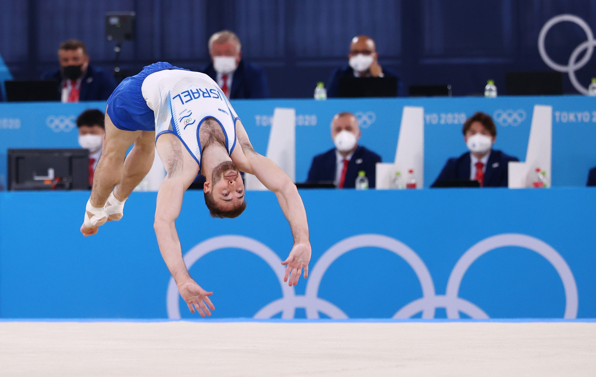
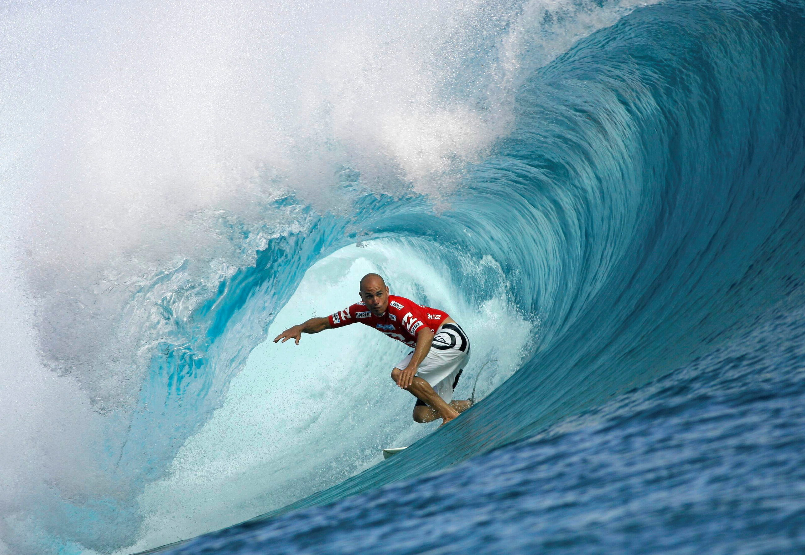
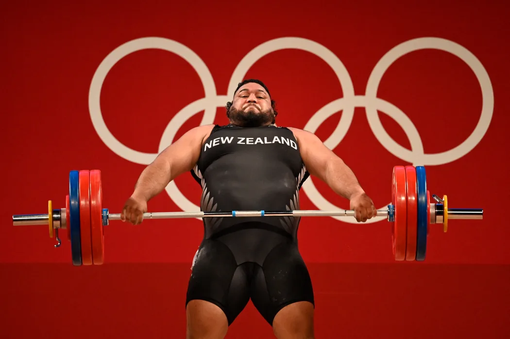

Poursuivez le voyage

Pour la deuxième fois de son histoire, Tokyo accueille les Jeux Olympiques, reportés d'un an en raison de la pandémie mondiale de COVID-19.
Tokyo accueille les Jeux pour la deuxième fois, après 1964. Initialement prévus en 2020, ils ont été reportés d'un an à cause de la pandémie de COVID-19 — une première dans l'histoire olympique moderne. Malgré l'absence du public dans la plupart des sites, les athlètes ont livré des performances d'exception pour offrir un spectacle mémorable.
Le Stade National de Tokyo, le Ariake Arena, le Budokan — Tokyo a conjugué tradition et modernité dans ses arènes olympiques. La baie de Tokyo a accueilli les épreuves nautiques tandis que le vénérable Nippon Budokan, temple des arts martiaux japonais, a vibré pour le judo et la boxe.
Tokyo 2020 a marqué l'entrée historique de cinq nouvelles disciplines : le skateboard, le surf, l'escalade sportive, le baseball/softball et le karaté. Ces ajouts témoignent de la volonté du Comité International Olympique de toucher les nouvelles générations et d'élargir l'audience des Jeux.
Organisés dans un contexte sanitaire inédit, les Jeux ont nécessité un protocole sanitaire sans précédent. Malgré l'absence de spectateurs, Tokyo a misé sur la technologie pour connecter le monde : diffusions en ultra-HD, réalité augmentée et innovations numériques ont permis à des milliards de téléspectateurs de vivre l'événement.
« L'essentiel aux Jeux Olympiques n'est pas de gagner mais de participer, car l'important dans la vie n'est point le triomphe, mais le combat. »
— Pierre de Coubertin, fondateur des JO modernes
23 Juillet - 8 Août 2021
Baptisée « United by Emotion », la cérémonie d'ouverture s'est tenue le 23 juillet 2021 au Stade National de Tokyo, en présence d'un nombre très restreint d'officiels, sans spectateurs en raison des restrictions sanitaires liées au COVID-19.
Cette cérémonie sobre et poétique a rendu hommage à la résilience humaine à travers des tableaux artistiques mêlant tradition japonaise et modernité. Le drapeau olympique a été porté par des athlètes représentant différentes nations, symbolisant l'unité dans la diversité.
Le moment le plus émouvant reste l'allumage de la vasque olympique par la joueuse de tennis Naomi Osaka, symbole d'une jeunesse déterminée à dépasser les frontières. Le Japon a offert au monde un spectacle plein de symboles et d'espoir malgré la pandémie mondiale.
Histoire, règles fondamentales et athlètes légendaires qui ont marqué l'édition de Tokyo 2020

Alliance parfaite de puissance athlétique et d'élégance, la gymnastique artistique regroupe plusieurs agrès — sol, barres, poutre, saut, anneaux — où chaque dixième de point peut faire basculer une carrière entière.
À Tokyo, la salle d'Ariake a été le théâtre de moments intenses, notamment le retrait puis le retour courageux de Simone Biles, et la domination écrasante de la Russie (ROC) au concours général par équipes masculin.

Né sur les plages polynésiennes, le surf fait son entrée olympique à Tokyo. Les athlètes sont jugés sur la qualité de leurs manœuvres sur les vagues naturelles, rendant chaque compétition unique et totalement imprévisible.
La plage de Tsurigasaki, à 100 km de Tokyo, a offert des vagues puissantes et spectaculaires. Les compétitions ont dû s'adapter aux conditions naturelles, faisant du surf l'épreuve la plus imprévisible et captivante de ces Jeux.

L'haltérophilie est l'un des sports les plus anciens des Jeux modernes. Les athlètes s'affrontent en deux mouvements — l'arraché et l'épaulé-jeté — pour soulever le plus lourd total possible au-dessus de leur tête.
Tokyo 2020 a été une édition historique pour la discipline, avec plusieurs records du monde pulvérisés. La Géorgie, la Chine et la Corée ont dominé des compétitions d'une intensité absolue.
Pays et athlètes qui ont marqué les Jeux Olympiques de Tokyo 2020
Classement par nombre d'or — Tokyo 2020
Les performances individuelles les plus marquantes
Sources : Comité International Olympique (CIO) · Tokyo 2020 · données officielles finales
Survolez un site pour découvrir les épreuves et médailles qui s'y sont jouées
Le flambeau allumé par Naomi Osaka, l'athlétisme légendaire de Warholm — le Stade National a été l'épicentre des émotions des JO 2020.
Temple historique des arts martiaux japonais, le Budokan a accueilli pour la toute dernière fois le karaté olympique, avant son retrait du programme des Jeux.
Le tout nouveau site urban sports a été le cadre d'une révolution olympique, avec les premières médailles d'or de skateboard et d'escalade de l'histoire des Jeux.
Caeleb Dressel, 5 médailles d'or, une seule semaine — le Centre Aquatique de Tokyo a été le théâtre du règne absolu de l'Américain sur la natation mondiale.
La "forêt de Musashino" a vibré pour les as du volant, avec Viktor Axelsen dominant de bout en bout un tournoi de badminton d'une intensité exceptionnelle.
Les eaux de la baie de Tokyo ont accueilli des épreuves nautiques épiques malgré des températures très élevées qui ont mis à l'épreuve les athlètes.
La salle de Saitama a accueilli le retour triomphal du Dream Team américain, avec Kevin Durant brillant de mille feux pour sauver les USA de l'élimination précoce.
Le retour du baseball et softball après 13 ans d'absence a été célébré à Yokohama, avec le Japon dominant les épreuves féminines sur ses terres.
Poursuivez le voyage